DIABOLOS REX

1960
| 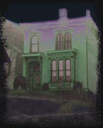 |
|
"Инсмутский дом (House of Innsmouth)" |
Год начала существования Церкви Дьявола (Rex Diabolos Church), находящейся в маленьком разлагающемся прибрежном городке Астория (Astoria), штат Орегон. Родители Рекса (Rex) владеют скромным домом в викторианском стиле, расположенном в Сентинел Хилл (Sentinel Hill). Астория – одно из древнейших поселений к западу от Скалистых Гор. Город является центром рыболовства и меновой торговли. Есть здесь и железная дорога, построенная китайскими рабочими. Подвальная комната Рекса находится над сетью туннелей, построенных руками осужденных контрабандистов по приказу трибунала военачальника Тонга. Именно эти туннели стали первым местом проведения ритуалов и размышлений. Здесь зачинаются и развиваются ранние идеи Эстетического Терроризма (Aesthetic Terrorism) и Сатанинского искусства.
| 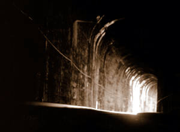 |
|
«Туннели Тонга (Tunnel of the Tongs)» |
1966
В первый год существования американской Церкви Сатаны (Church of Satan) родители Рекса вступают в эту организацию, посетив перед этим лекцию Антона ЛаВея (Anton Shandor LaVey) в имеющем ныне дурную репутацию Черном Доме (Black House).
Рекс посвящает свою подземную ритуальную комнату самому «Черному Папе».
1967
Рекс работает над первыми металлическими скульптурами, а также пробует работать с красками и графитом. Его отец – помощник машиниста, помогает ему выковывать детали и вырезать восковые рельефы. Изготавливаются ножи, кинжалы и части огнестрельного оружия.
 |
|
«Военачальник Тонг (Tong warlord)» |
1968
Рекс одержим туннелями Тонга. Он воздвигает там алтарь Дьявола и оформляет альков своими ранними работами и работами других художников.
 |
|
Мумия, Джейк (Composite mummy, Jake) |
1969
Рекс впервые сталкивается с двумя работами неизвестного шведского художника- сюрреалиста Х. Г. Гигера (H.G.Giger). Эти две картины имеют потрясающее воздействие на зарождающегося мастера. Рекс много читает. Сатанинская Библия (The Satanic Bible) и работы Г.Ф. Лавкрафта – писателя из Новой Англии – обеспечивают должное вдохновение для создания нескольких важных работ, выполненных пером и чернилами.. Повесть Лавкрафта «Тень над Инсмутом» частично раскрывает параллели с историей и прибрежным расположением Астории. Одним из экспонатов Музея Марша в ЛонгБич, Вашингтон, является Джейк – человек-аллигатор. Рекс проводит множество часов, рассматривая Джейка и коллекцию засушенных голов Марша.
1970
Рекс со своим отцом предпринимают путешествие по Ближнему Востоку для того, чтобы встретиться со старыми друзьями. Во время путешествия Рекс посетил множество «инфернальных» мест в Персии, Сирии, Ираке и сделал наброски местных злых духов. У горы Лалеш (Lalesh), в одном из Зиарахов (Башен Сатаны) им был совершен ритуал воззвания к Азазелю и получено предсказание. По возвращении в штаты, были созданы картины: Pazuzu the Great Liberator, Baal of Peor, Erishkigal, Shaitan.
1971
Рекс продолжает совершенствовать свою ритуальную комнату с помощью более совершенных образов и картин. Создавая скульптуры из стали и занимаясь отливкой костей из метала, он вырабатывает новую технику изобразительного искусства «Art Necro». В течение лета 1971-1972 созданы некоторые скульптуры. Заканчивается работа над Dog Star Urn, Necromantic Push-Me Pull-You и саркофагом из стали. Все работы заряжаются определенной энергией.
| 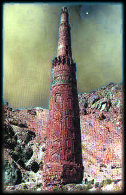 |
|
«Зиарах (The ziarah)» |
1972
Публикация книги Антона ЛаВея «Сатанинские Ритуалы». Книга становится «инфернальным граалем» для работ Рекса. «Call to Cthulhu» и «Die Electrististchen Vorspile», послужила созданию новых образов для работ Techno-Magick и EMS Spectrum Sorcery.
1973
Летнее путешествие в Индию и Непал. Индийские Дьяволы и яростные духи, запечатленные в скульптурах древних мастеров, вдохновили Рекса на создание нео-некро версий Кали-Юги, Ситипати, Дурги, Нага Каньи, Ямы и Мары, тибетского аналога Сатаны.
У монаха Бон По (Bon Po) – жреца, специализирующегося на колдовстве, художник приобрел кинжал «Purbu», известный также как магическое копье. Этот предмет стал магическим орудием для ритуалов разрушения, которым Рекс пользуется и по сей день.
Новая работа «Призвание Ньярлатхотепа (Invocation of Nyarlathotep)» стала результатом сочетания оккультных традиций и изобразительного искусства.
1974
Первая публичная выставка мастера. Она проходит в рамках конкурса школы молодых художников, среди студентов которой был он сам. Рекс представил три картины и скульптуру «Dog Star Urn». Этот элемент «Эстетического Терроризма» представляет собой две усеченные пирамиды, на боковых сторонах которых есть отверстия для того, чтобы видеть содержимое – стальной человеческий череп, покрытый металлическими щупальцами и наполненный гниющим мясом и кишками из местных рыбных магазинчиков. Черви кишат в гнилом мясе, но Рекс решает добавить другой разновидности червей для того, чтобы завершить образ шевелящейся миазмы. Свет прожектора, направленный внутрь скульптуры, показывает «пасть самого Ада» и делает зловоние очевидным. Профессорско-преподавательский состав (который, увидев бы нечто подобно сегодня, несомненно назвал бы Рекса террористом), ужаснувшийся увиденными работами и их оформлением, отстранил его от будущих показов. Молодой Сатанист становится пугающей загадкой для своих однокурсников, но в то же самое время объектом сексуальной страсти Улы Ульдар (Ula Uldar), студентки из Северной Испании, проходящей обучение в той же школе. Рекс знакомит ее с книгой ЛаВея «Сатанинская Ведьма», и они вместе становятся спичкой, способной зажечь Пламя Ада. Это продолжалось до тех пор, пока Ула не вернулась в Европу спустя два года.
1975
Туннель Тонга становится местом практики сексуальной магии и ритуалов крови. Рекс и Ула работают над созданием гомункула из выделений их тел.
Результатом изучения технологий Теслы становится создание электрической спирали в гараже дома. Спираль рассчитана на получение электрического напряжения, равного шести миллионам вольт. Когда она была активирована, дома двадцати соседних кварталов лишились освещения.
1976
Рекс начинает работать аэрокистью. Его ранняя аэрография запечатлена в основном на нескольких тридцати шести дюймовых лезвиях огромных циркулярных пил. Металлическая поверхность прекрасно сочетается с эстетикой мастера, и этот материал используется им и сегодня. Лезвие циркулярной пилы обладает также и тайным, оккультным смыслом. (См. Apocalypse Sigil Analysis)
1977
По совету своей подруги художник увеличивает размеры своих полотен до восьми футов в высоту и шести футов в ширину. Это предел, который позволяют размеры студии. Меньшие полотна, покрытые символами и изображениями, похожими на тотемные, появляются в серии «Necro Totem».
| 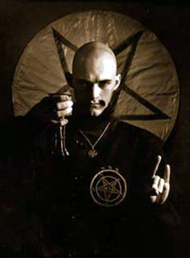 |
|
Рекс. Приблизительно 1978 год |
1978
Поздней осенью мастер устраивает выставку своих работ в своей студии и туннелях Тонга для друзей и знакомых. Маленькие комнаты были до предела заполнены гостями, приехавшими даже из Нью-Йорка. Выставка имеет беспрецедентный успех, который подготовил почву для создания Пристанища Сатаны (Asylum Of Satan).
В том же году Рекс официально вступает в Церковь Сатаны.
1979
В Вальпургиеву Ночь в своей ритуальной комнате Рекс приготавливает воды ZamZam и ритуально обривает себе голову на манер древних колдунов, осуществляя договор с Силами Тьмы. Он берет себе имя Nyarlathotep Diabolos Rex как имя посланника Повелителей Хаоса.
Работа последних шести лет собирается воедино для издания «Черной Книги Ньярлатхотепа» («Nyarlathotep’s Black Book»).
 |
|
Наташа Пэйдж и Diabolos Rex с Черным Папой Антоном ЛаВеем |
1980
Рекс устраивает первую официальную выставку Пристанища Сатаны (Asylum Of Satan) – «Империя Преисподней, Сатанинское Искусство Diabolos Rex» («The Infernal Empire, The Satanic Art of Diabolos Rex»). Маленький город полнится слухами о поклонении Дьяволу. Мастер становится объектом страха и подозрения со стороны властей.
1981
Выставка «In Menstruel Nacht» была открыта в Вене на конвенции «Eva Gille’s Gallerie Toten», где представили свое творчество члены школы фантастического реализма Эрнста Фука (Ernst Fuch). Рекс представляет первую версию своего полотна Kali Yuga.
Это событие является чрезвычайно важным для молодого художника. Здесь мастер посещает Святилище Алефа (Aleph Sanctuary) музея Фука и имеет возможность видеть триптих Satan’s Heaven.
Новые знакомства с Сатанистами Сиэтла и Вашингтона увенчиваются выставкой «Shadows over Innsmouth».
С этого времени имя Рекс становится культовым.
1982
Рекс предпринимает путешествие в Непал с целью навестить друзей и исследовать ритуалы Bon Po – ритуалы колдунов и заклинателей, живущих на самой крыше земного мира.
Здесь Рекс знакомится с Дургой Годбули (Durga Godbuli), женщиной-порноскульптором, террористкой, посвященной в «культ черепа». Дурга, проникнувшись идеями Церкви Сатаны и очарованная влиянием Рекса, создает новую версию ритуала Кали. Их первое совместное магическое дело заканчивается обильными муссонными дождями, которые затапливают маленькую деревню Силигури (Siliguri) грязевыми потоками и мертвыми телами, смытыми с местного кладбища. Замысел действия соответствовал последствиям.
Дурга преподносит в дар Рексу Кубок Кали, сделанный из верхней части отрубленной головы убийцы. В обмен Рекс дает Дурге то, о чем не упоминают.
1983
Вернувшись из страны секса, смерти и болезни, мастер начинает работу над серией небольших работ для показа «Tulpa Spell Bondage». Премьера происходит зимой и начинается испитием из Кубка Кали.
1984
Рекс предпринимает короткую поездку в Провиденс, Род-Айленд (Providence, Rhode Island) с целью посетить могилу Г.Ф. Лавкрафта. За оградой Рекс молчаливо общается с покойным. Затем он отправляется в Бостон и Салем. Местный феминистский контингент, соблюдающий традиции Викки (Wicca), свирепеет, когда распознает на груди художника медальон с изображением Бафомета.
Вернувшись в Асторию, Рекс собирает несколько старых работ и создает еще три новых для показа «As A Foulness Ye Shall Know Them». Работы выставляются в галерее Пристанища Сатаны (AOS Gallery).
1985
Рекс приступает к работе для выставки «Lords of Chaos». Работа австралийской черной ведьмы Розалин Нортон (Rosaleen Norton) вдохновляет художника на то, чтобы увековечить забытую колдунью, перерисовав ее картину «Люцифер».
1986
Проходит вторая ежегодная выставка Portland Erotic Art Show. Рекс выставляет картины «Phallagorgon» и «Hecate». Он дает короткое интервью отделу искусств Орегона, который очень встревожен заявлением Рекса об одобрении евгеники, войны и голода. Рекс говорит, что видит в этом решение вопроса очистки крови наступающей Сатанинской эпохи.
| 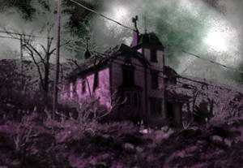 |
|
«Инсмутский дом II (House of Innsmouth II)» |
1988
Поездка в Нью-Йорк с целью встретиться с Питером Гилмором и Пегги Надрамиа. Это – сатанинское возвращение домой. Гилмор раскрывает темную сторону жизни «Современного Вавилона». Это становится причиной осознания того, что первичной силой стоящей за современным сатанизмом является Интрига, Заговор. Ярчайшими событиями поездки становится: экскурсия по району Сохо, где в индийском ресторане происходит манифестация Бога Сета, представление Герману Шталеру (Herman Staler), известному хозяину магазина оккультных товаров «The Magical Childe» и перелом носа Геральдо Ривера (Heraldo Rivera) на национальном телевидении через три дня после того, как он стал объектом Сатанинского проклятья.
1989
Художник переезжает из Астории в Нью-Хейвен, Коннектикут, для того чтобы жить вместе с Наташей П. Это дает возможность часто ездить в Нью-Йорк, где Рекс и Гилмор совместно работают над разными проектами. Благодаря библиотеке искусств Яле (Yale Art Library), Рекс получает доступ к редким книгам и работам всемирно известных художников. Здесь же, на открытом форуме по сатанизму, устроенному движением Университетский Крестовый Поход За Христа (Campus Crusade for Christ), Рекс спорит с Джерри Джонсоном (Jerry Johnson), автором книги «Владения Зла» («The Edge of Evil»). Джерри Джонсон, проиграв спор, уходит, поджав хвост.
Поездка в Сан-Франциско к Антону ЛаВею. Художник дарит ему свою работу «Toxic Shock Priestess». Картина висит в главной ритуальной комнате Черного Дома, до ее пропажи после смерти Черного Папы. Где сейчас эта картина – неизвестно.
В инсмутстком доме (в доме родителей Рекса, Астория) и туннелях Тонга проходит выставка "Hell Razor".
 1990
1990
На чердаке дома Рекса и Наташи оборудуется новая ритуальная комната. 31 октября проводится ритуал Die Elechtritschen Vorspiele и проходит торжественное представление нескольких новых работ.
Рекс заводит щенка, однолетнего чау-чау, названного им Брухо («Brujo» исп. колдун). Созданы I и II версии «Псов Тиндала» («Hounds of Tindalos»). В галерее GOZ, в Нью-Йорке, выставлена работа «Aristocracy of Blood». Потерявшая рассудок посетительница, у которой началось спонтанное кровотечение, была срочно госпитализирована.
 1991
1991
Рекс возвращается на северо-запад в Портлэнд и обустраивает новое обиталище в небольшом складском помещении. Размеры новой студии позволяют работать с большими форматами, нежели раньше. Здесь же художник знакомится с Эрикой Х., которая на протяжении последующих трех лет становится его любовницей и музой. Темными ночами, пока он работает, Эрика читает ему вслух шизофренические порнографические литании Джеймса Хейвока (James Havoc, «Satan Skin»). С помощью этих литаний и совершаемых кровавых ритуалов, Эрика оказывает глубокое влияние на художника во время его работы над изображением женских демонических сущностей. Это отражено в таких картинах, как «Curse of Yig», «Dagonite I», «Kali Yuga».
Осенью того же года, Рекс и Эрика отправляются в Нью-Йорк, где проводится новая выставка мастера, получившая название «Diabolicon»
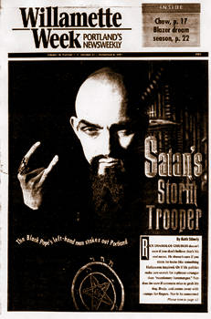1992
На показе фильма «Триумф Воли» в кинотеатре Портлэнда Рекс знакомится с оккультным фашистом и пианистом-виртуозом Кейтом Стимли (Keith Stimely), который берет интервью у художника для местного еженедельника Willamette Week. В номере обозревается искусство мастера, его дикое человеконенавистничество и мировые перспективы Сатанизма. Некоторые меткие, рискованные и непристойные наблюдения, высказанные Рексом в интервью, взбесили местные добродетельные организации и сделали этот номер издания самым популярным во всей его истории.
В новом Пристанище Сатаны, основанном в Портленде, Рекс организует выставку «Cyber satanic Sex Magick Ritual».
1993
Через Кейта Стимли Рекс знакомится с Адамом Пафри – Мистером Апокалипсис (Adam Parfrey, Mr.Apocalypse) – издателем Feral House, который включает короткое интервью с художником в документальный фильм «Speak of the Devil». Интервью проводится перед апокалиптическим алтарем Рекса, которого сопровождают Эрика и Кейт.
Пафри планирует выставку Cult Rapture в Сиэтле и предлагает художнику участвовать в предстоящей выставке и создать что-либо для секции, посвященной Сатанизму.
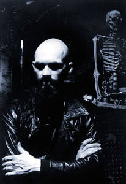1994 (часть I)
Рекс начинает работу над проектом «Serpent Temple» для показа на Cult Rapture. Его замысел включает в себя два полотна «Curse of Yig» и «Leviathan» размерами шесть на восемь футов, а также картину «Qlipothtic Oracle», выполненную на лезвии циркулярной пилы диаметром шесть футов.
Три гигантские картины поддерживались тяжелой стальной трубчатой структурой. Общий вес инсталяции составлял три тысячи фунтов. Композицию завершал трапециевидный алтарь и человеческий скелет.
Рекс много работает в течение девяти месяцев, чтобы закончить картины.
 1994 (часть II)
1994 (часть II)
Выставка Адама Парфи Cult Rapture открывается первого октября в Центре Современного Искусства (Center On Contemporary Art), в Сиэтле, штат Вашингтон. Свое творчество представляют такие художники, как Джоел Коулмен (Joel Coleman) и Джордж Хайем (George Higham). Выставку посещает Роберт Тейлор (Robert Taylor), одинист и жрец Асатру. Рекс и Роберт обсуждают апокалиптичность происходящего.
В ночь закрытия выставки, тридцать первого октября, ломается паровой клапан системы отопления. В результате аварии галерея заполняется очень горячим паром. Управляющие музея не позволяют войти в помещение в течение трех дней. В связи с этим секция Рексa потерпела частичные разрушения.
1994 (часть III)
Художник подает в суд иск на сумму восемьдесят тысяч долларов. Язвительные страховые агенты Нью-Йорка заклеймили это дело «Делом Сатаны» («Satan File»). Главный агент обвинителя пытается обмануть художника, приведя в качестве аргумента заключение неквалифицированных оценщиков картин. В ответ Рекс накладывает проклятье на нью-йоркского обывателя, в результате которого тот переворачивается на своей новой спортивной машине при столкновении с разделительной полосой на скоростной трассе. В результате ущерб был возмещен.
 1995
1995
Электронный музыкант и друг художника Эвелин Оверхолсер (Evelyn Overholser) задумывает создание Галереи Тиндала (Gallery Tindalos), названной так по мотивам рассказа Франка Белкапа Лонга «Псы Тиндала» («The Hounds Of Tindalos», Frank Belkap Long). Проект откладывается с целью сделать его подразделом на веб-сайте Asylum of Satan.
Рекс едет в Денвер, штат Колорадо, и встречается с издателем Black Flame Питером Гилмором и музыкантом Бойдом Райсом (Boyd Rice, NON). Там же происходит запланированное появление на христианском радио-шоу Боба Ларсона «Возражение» (Bob Larson, «Talk Back» radio show), которое впоследствии было названо cатанинской встречей на высшем уровне. Рекс, Бойд Райс, Питер Гилмор, Томас Торн (Thomas Thorn) (The Electric Hellfire Club) Гиддл Патридж (Giddle Partridge), и Шауна (Shauna) делают фотографии в старой тюрьме в Каза Бонита (Casa Bonita).
Проходит частный показ картин из серии «Hounds Of Tindalos».
1996
Рекс знакомится с оккультным веб-дизайнером Даниэлем Акзинором (Daniel Akzinor), который предлагает сделать сетевую версию галереи Пристанища Сатаны (Asylum of Satan). Небольшая экспериментальная веб-страница содержит несколько работ художника и встречает одобрение у посетителей, несмотря на то, что находится в бездействующем состоянии из-за более неотложных проблем.
Создаются первые версии композиций Tetaphon Projekt. Завершены работы «Dagonite» и «Shoggoth» для издания ScapeGoat, а также работа «Yog-Sothoth» для журнала Боба Джонсона «Высший Свет» («High Society», Bob Johnson).
Рекс дает интервью для X-Magazine, издания о сексе и киберкультуре.
Организуется и проводится показ «Alchemy of the Qlippoth».
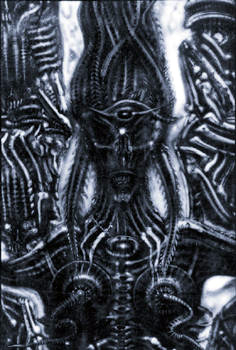1997
Ювелир Роберт Гиртон (Robert Guirton) работает с Рексом над дизайном Знака Апокалипсиса для обложки портфолио мастера «The Abomination Of Desolation». Также была изготовлена эксклюзивная трость с серебряной головой Дагона.
Начата работа над проектом «Apocalypse Theology». Размеры полотна – девять на восемнадцать футов. Вторая версия картины «Abraxas Rising» размерами шесть на восемь футов выпущена в печатном виде ограниченным количеством в триста шестьдесят пять копий.
Ранним утром тридцать первого октября из телефонного разговора с Питером Гилмором Рекс узнает о смерти Антона ЛаВея. Умер Черный Папа, Эмиссар Сатаны на земле. За этим следует патетический захват власти негодяями и еретиками, но сатанинская Воля восторжествовала.
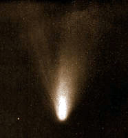1998
Продолжается работа над «Apocalypse Theology» и начата новая картина «Nyarlathotep, the Crawling Chaos». Она имеет необычную форму в виде тау-образного креста и уникальное обрамление.
Новое полотно «Pazuzu the plague Lord» дополняет содержимое студии.
Рекс планирует операцию по подкожной имплантации рогов и обсуждает свою идею с экспертом в области модификации тела Стивеном Хейвортом (Steven Hayworth).
1999...

CONTRA DEI: Имя Diabolus Rex мало известно в России. Пожалуйста, представьтесь нашим читателям и расскажите свою историю в нескольких словах. Чем вы сейчас занимаетесь?
Rex: Русские могут посмотреть мое портфолио на моем сайте www.asylum-of-satan.com. О моих ранних работах и о моих действиях вы можете узнать у Церкви Сатаны. Кроме того, вы можете ознакомиться с моей биографией.
CD: Глядя на этот мир вашими глазами – глазами художника, вы находите его красивым или ужасным? Действительно ли это естественная среда обитания? Является ли этот мир единственно реальным для существования или в нем что-то не так? На ваш взгляд, что или кто обустроил этот мир? Завершен ли его «дизайн»?
Rex: Когда-то человеческая цивилизация была более «Традиционной» и была более твердо привержена темной духовной философии, нежели сейчас. Истина не была всего лишь эмоциональной иллюзией, а живой, дышащей стихией, к которой могли прикоснуться Черные Маги, и только они. Но в сегодняшнем эгалитарном мире, «истина» – грязнейшее слово.
CD: Что для вас означают такие понятия, как красота и ужас? Боитесь ли вы чего-либо?
Rex: Я не боюсь ничего, особенно это касается Темной Стороны, ибо часть этого есть внутри меня. В моем понимании темное, зловещее и запретное единственно красиво и несравнимо с плебейской идеологией «красоты».
CD: Большинство ваших работ изображают зловещие миры и создания воплощенные из человеческой, либо похожей на человеческую, плоти и костей. Они выглядят действительно впечатляюще и зловеще. Плоть в данном случае является естественным материалом для ваших работ или это лучшая форма для воплощения ваших идей? Ваши комментарии.
Rex: Мои работы представляют собой не символы, а действительно настоящие «Сущности», которые подразумевают энергию и значение того, кто они есть. Они старше, чем сама Вселенная и приходят в этот мир во время ритуала лишь посвященным – отшельникам, которые всецело преданы им.
 CD:
Это свойственно природе человека – воображать и изображать добро и Зло, бога и
Дьявола. Шедевры Доре и Дюрера могут послужить лучшим примером этого явления.
Человек видит бога красивым и всемогущим. Человек представляет Дьявола ужасным,
враждебным и пораженным. В чем, по-вашему, причина этого феномена и вероятна ли
возможность взаимодействия человека с ужасным Злом против красивого добра?
CD:
Это свойственно природе человека – воображать и изображать добро и Зло, бога и
Дьявола. Шедевры Доре и Дюрера могут послужить лучшим примером этого явления.
Человек видит бога красивым и всемогущим. Человек представляет Дьявола ужасным,
враждебным и пораженным. В чем, по-вашему, причина этого феномена и вероятна ли
возможность взаимодействия человека с ужасным Злом против красивого добра?
Rex: Большинство людей по своему естеству находятся ниже животных. Они лишь пустая оболочка, отброшенная бессмертными, которые однажды правили этой планетой. Человеческие существа лишь пища для Демона, Вампира, Оборотня – истинных детей Тьмы.
Сатанист – представитель Ночной Породы, и не может быть повержен мертвым богом еврейских рабов.
CD: Как вы считаете, возможно ли реализовать в какой-то мере Зло через искусство и творчество, которые инспирированы Им и говорят о Нем? Своими работами, привнесли ли вы сами часть Зла в этот мир? Если да, то, как оно себя проявляет?
Rex: Мое искусство, как и мое появление, приносит людям множество основательных опасных или неадекватных ситуаций. То, что творят мои работы в мире – несомненное «Зло» для христианских рабов, но меня мало интересует то, что они думают.
CD: Люди наслаждаются ужасом. Люди мечтают об ужасе. Им снятся ужасные кошмары. Многие люди сами по себе являются настоящим ужасом для других людей. Люди удовлетворяются ужасом, находя его в фильмах, книгах, изобразительном искусстве и в своей обычной жизни. Ваше отношение ко всем им и к ужасу?
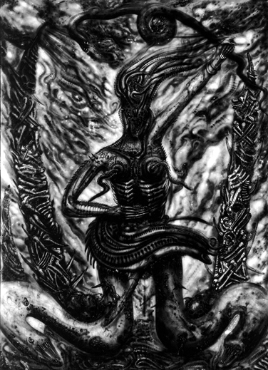Rex: Ужас и образы Зла – священные символы, которые принадлежат только Сатанисту. Если бы я на земле был Сатанинским Царем, я бы не позволил не-сатанистам читать, изображать, писать книги, музыку, снимать фильмы или каким-либо другим образом участвовать в том, что имеет отношение к Царству Дьявола. Я бы даже не позволил обычным людям носить черный цвет, так как я считаю этот цвет священным и доступным лишь существам из тени.
CD: Кто или что привело вас к Сатанизму? Если это были ваши родители, расскажите о них. Какими людьми они были? Если это были не они, почему вы решили идти по этому Пути?
Rex: Мои родители были в числе первых членов Церкви Сатаны (Church Of Satan) и знали Антона ЛаВея (Anton LaVey). Я же в свою очередь узнал его спустя несколько лет. Мои родители не затаскивали меня в Сатанизм, моя природа сама проявила себя.
CD: Расскажите о своих проектах: Таро Сатаны (Tarot of Satan) и Псы Тиндала (Tindalos).
Rex: Таро Сатаны – очень большой проект, над которым я работаю уже несколько лет. Я надеюсь завершить его к 2005 году. Как и все мои картины, Таро выполнено аэрографией на огромных стальных листах. Я планирую развешать их на крюках под потолком галереи таким образом, что зрителю придется пройти путем Klippoth для того, чтобы увидеть все картины. Я хотел бы приехать с выставкой в Россию, чтобы показать ее славянским Сатанистам. Полная колода будет доступна для приобретения и просмотра на www.asylum-of-satan.com. Галерея Тиндала – это галерея моих скульптур, где я скоро представлю новые скульптуры и литье. Моя новая скульптура – биомеханический «Питбуль». Я думаю, что вам будет интересно на это посмотреть. Собаки этой породы – лучшие бойцы среди собак этой планеты. Это священные Сатанинские животные и они заслуживают должного места в истории. У меня два таких пса и я их очень люблю.
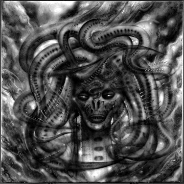CD: Каково ваше понимание Зла, Сатаны и Сатанизма?
Rex: Не было ни одного момента, когда «Зло» было бы реальным. Истинный Сатанист знает, что Зло – абстракция для запугивания масс, но он так же знает, что Сатана действительно реальная сущность, которая существует во времени и пространстве. Сатана может нарушить законы Вселенной посредством изменения их сути при помощи Темных антиматериальных Сил. Сатана есть «Устремленность» или сила сущности, которая не может быть заключена в концепцию, доступную убогому человечеству. Истинный Черный Маг может познать эту Темную Силу через приверженность к мышлению (noesis) и некоторому аскетизму. Так я создаю своих чудовищ.
CD: Ваше отношение к современному Сатанизму? Не находите ли вы его чрезмерно гуманистичным? В чем заключается ваше участие в Церкви Сатаны (Church Of Satan)? Ваше понимание Сатанизма, является ли оно тождественным доктрине этой организации?
Rex: Современный Сатанизм вульгарен. Он вопиюще материалистичен, научен и объективен по отношению к феноменам Вселенной. У меня есть свой взгляд на воплощение воли Князя Тьмы как живой «Сущности», но оставлю свои комментарии для тех, кто их поймет и не расценит их, как являющихся частью доктрины CoS (Church Of Satan).
В Церкви Сатаны я – Магистр Храма (Magister Templi). Это – высшая должность, которой кто-либо может добиться, в отличие от должности Высшего Жреца, которую единовременно может занимать лишь один человек.
CD: Изображая Темные Силы, вступали ли вы когда-либо во взаимодействие с Ними? Они – Темные Силы, процессы Зла во Вселенной, или же ваше видение художника позволяет вам видеть и чувствовать Их более живыми, воспринимать Их более личностно?
Rex: Я думаю, что мои предыдущие ответы достаточно прояснили для вас мои убеждения и мое понимание. Меня часто «посещают» Силы, когда я работаю в моей мастерской, и мои гости часто ощущали Их присутствие. Эти люди чаще всего были напуганы и больше не приходили ко мне домой. Это одна из причин, по которой мне сложно устроить выставку в этой стране.
CD: В вашей биографии вы упоминаете некоторые ритуалы, совершая которые вы обращались к Сущностям Азазеля, Ньярлатхотепа… Чего вы хотели добиться, и каковы были результаты ваших ритуалов?
Rex: Я последователь Говарда Филлипса Лавкрафта (H.P.Lovecraft) – американского писателя, писавшего в жанре ужаса. Я разработал и провел ритуалы по призванию Богов, упоминаемых в Некрономиконе (Necronomicon). Сам Некрономикон существует независимо от всего, сам по себе, скорее не на физическом, а на духовном уровне.
Эти ритуалы были созданы, для того чтобы я мог лучше «Увидеть и Узнать» эти Силы, ради пользы для искусства и магии.
CD: Почему вы проводили ритуалы именно с этими Дьяволами (Азазель)?
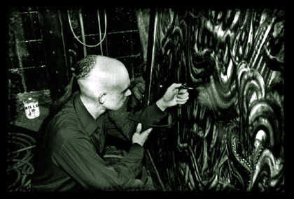Rex: Несколько лет назад я путешествовал по Ближнему Востоку, и именно эту часть мира населяли эти Дьяволы (Джинны).
CD: Какое значение для вас имеют ритуальные практики? Это возможность взаимодействия с Силами Тьмы или это способ вашего самовыражения?
Rex: Мои ритуалы – это манифестация моей воли и воздействие ее на окружающий мир. Это воздействие позволяет мне творить. Ритуалы также дают мне возможность развития и инициации, самоинициации. Тот, кто следует этим путем – путем ритуальной практики, способен приблизиться к Аду.
CD: Некоторые ваши работы, как и часть вашей жизни, связаны с Г.Ф. Лавкрафтом. Что вы думаете о созданной им мифологии? Это – Провидение? (Providence-город, где родился и жил Г.Ф.Лавкрафт. Название города переводится с английского как провидение. I am Providence – начертано на могильной плите Лавкрафта. Ред.) Ваше мнение о самом писателе?
Rex: Лавкрафт был пророком. Возможно, невольным, но тем не менее пророком. Его образ жизни и раннее воспитание позволили ему настроиться на темную сторону. Помогли ему подобно свету маяка во время шторма.
Темные Боги нашли его и никогда не отпустят.
Разумеется, он был великим писателем, но его главный вклад в том, что действительно создал царство новой мифологии и архетипов.
CD: Мифология, созданная Лавкрафтом и его видение Темных Сил существенно отличаются от других источников и традиций. Так ли это, или все-таки Силы Тьмы неделимы, и Тьма, Ее лики и Ее жители просто известны людям под разными именами. Ваши мысли по этому поводу?
Rex: Человечество в своем превосходящем большинстве не может знать эти Силы в Их наиболее истинном, властном обличии. Ибо люди не завершены как «сущности». Они подобны сорняку, который пытается узнать что, это значит – быть розой. Это знание запредельно для многих из них. Боги Хаоса пребывают в месте великой силы и великой Тьмы. Только истинный маг может знать Их. Это происходит в результате темной духовной инициации и определенной избранности.
CD: Есть ли что-то поистине великое, то, что вы хотели бы изобразить? Что бы вы не стали изображать никогда?
Rex: Я бы никогда не стал рисовать современный урбанизированный мир и что-либо мирское. Что касается того, что я могу создать, здесь нет никаких пределов. Поживем – увидим.
CD: Смотря на картины, которые вы уже написали, можете ли вы сказать, что уже создали шедевр?
Rex: Лишь тогда, когда художник полностью удовлетворен своей работой, то, что он создал можно назвать шедевром. Я бы оставил этот вопрос тупым бездарям без капли воображения.
 CD: Являются ли ваши работы видением другого мира, другой реальности? Можно
ли сказать, что ваши работы находятся в конфликте с окружающим миром? В чем
источник вашего вдохновения?
CD: Являются ли ваши работы видением другого мира, другой реальности? Можно
ли сказать, что ваши работы находятся в конфликте с окружающим миром? В чем
источник вашего вдохновения?
Rex: То, что создано мной не может находиться в конфликте с реальностью, потому что мои видения есть моя реальность.
CD: Вы много путешествовали. Что вы можете сказать о реализации идеи Зла по всему миру?
Rex: Люди везде одинаковы. Некоторые обладают достоинством, знают и видят правду, но большинство лишено этого.
CD: Какими вы представляете себе цели Ада по отношению к богу, человечеству, миру?
Rex: Мое идеализированное представление мира является подобным Аду. Возможно, именно вам оно было бы близким, но остальные вряд ли были бы довольны.
CD: Вы говорите об Антоне ЛаВее как о вашем друге. Расскажите об этой дружбе.
Rex: Я знал доктора ЛаВея много лет. Он был хорошим другом. Ему нравились мои работы, и он их коллекционировал. Я горжусь этим. Мне его очень не хватает, и я думаю, что мир после его смерти стал намного хуже.
CD: Что означает эстетический терроризм? Каковы цели подобного терроризма? Что вы думаете о событиях, произошедших в Америке 11.09.2002?
Rex: Эстетический Терроризм это творческий акт создания, это попытка изобразить Мир Ада созданный из плоти…
Исламский мир называет Америку «Великим Сатаной, Великим Противником», и я бы с этим согласился. Поэтому исламские дегенераты должны учесть, что не стоить шутить с Дьяволом. У меня может быть масса идей по поводу того, что нужно сделать с Ближним Востоком, но я не думаю, что большинство людей оценит мои предложения и согласится со мной.
Последние слова.
СЛАВА САТАНЕ!
P.S. Художник не захотел или счел ненужным ответить на ряд дополнительных вопросов.